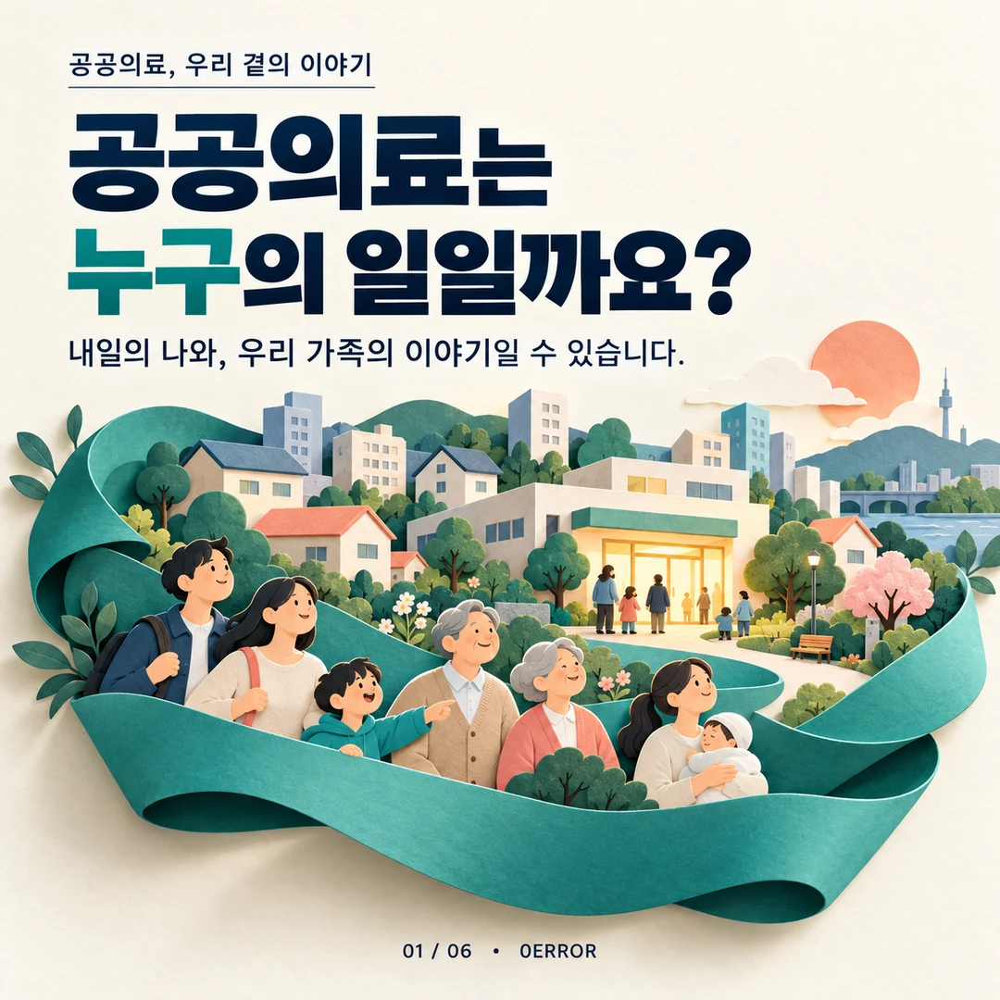
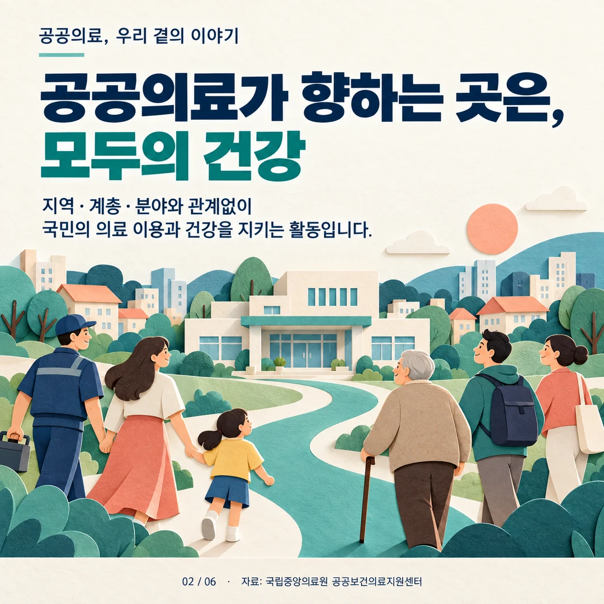
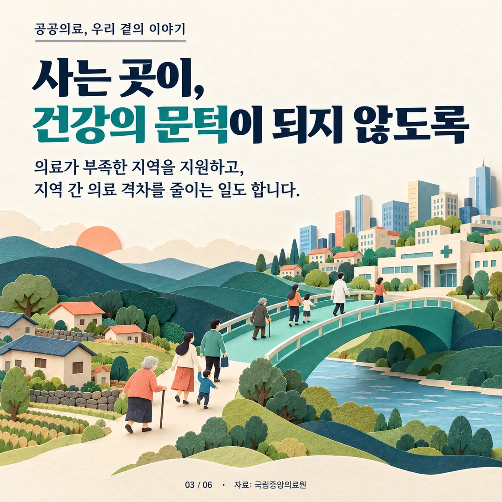
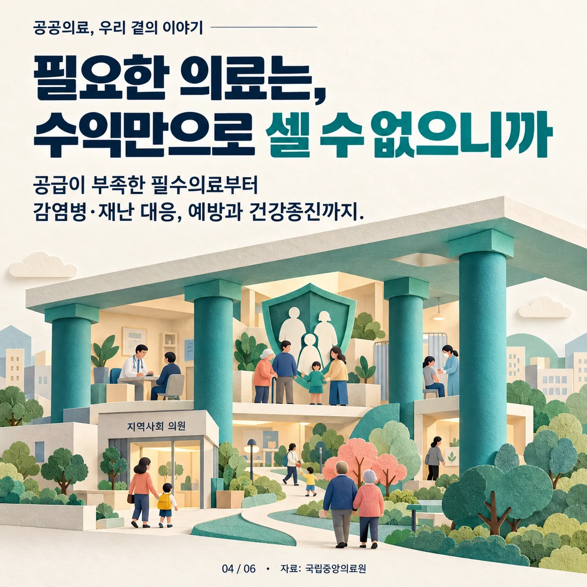
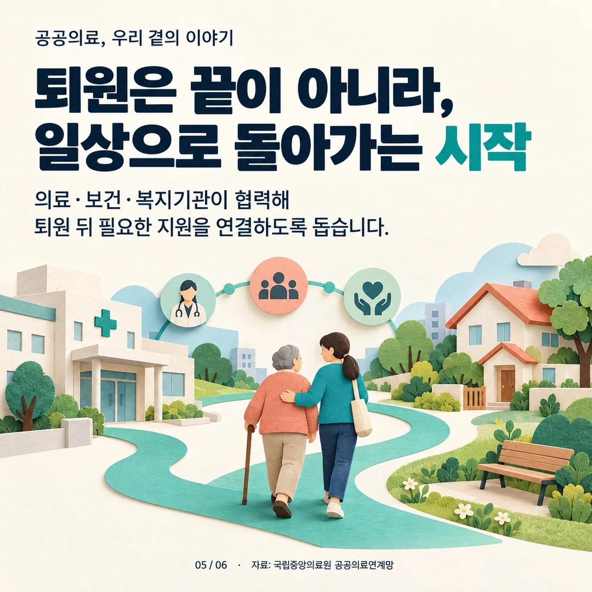
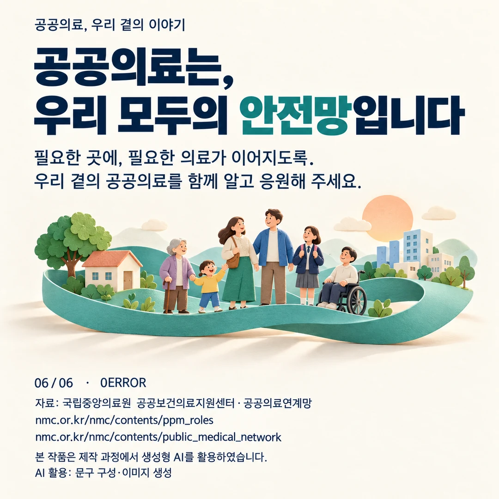

공공의료를 일상의 언어로 설명하기
하나의 주제를 세 매체로
대국민 공공의료 공모전을 위해 카드뉴스, 응원 숏폼과 수기를 준비했습니다. 공공의료를 특별한 누군가의 이야기가 아니라 가족과 지역의 일상을 받치는 안전망으로 설명하는 방향입니다. 카드뉴스는 공공의 역할, 영상은 감사·응원, 수기는 공학적 관점의 개인 의견으로 나누었습니다.
제 역할과 공동 제작
제작 기록의 제 역할은 기획이며 제작·편집에는 팀원의 기여가 있습니다. 수기는 제가 쓴 원고의 문장과 순서·핵심 내용을 유지하고 AI가 표현·문단·제목의 교정을 도왔습니다. 전체 영상·일러스트·음악을 단독 제작한 것으로 소개하지 않습니다.
AI 활용의 표시
카드와 영상 배경의 원화·내레이션 등에 AI 제작 지원을 활용했습니다. 영상의 종이 마을은 실제 환자·병원의 경험을 재현한 사진이 아닌 창작 비유입니다. 수기 역시 의료기관 종사 경험이나 실증 의료 연구로 확대하지 않습니다.
실제 결과물
1080×1080 카드 이미지 6장, 1080×1920의 52초 숏폼, 수기와 작품설명·출처·AI 활용 기록이 있습니다. 기획의 메시지가 매체별로 어떻게 구현됐는지 결과물을 중심으로 보여 줍니다.
정보·응원·의견을 다른 형식에 배치하기
같은 공공의료 주제를 세 형식에 그대로 반복하지 않았습니다. 6장의 카드뉴스는 지역·계층·분야를 넘어 필요한 의료를 잇는 공공병원의 역할을 설명합니다. 52초 숏폼은 시간을 가리지 않는 아픔과 밤의 불빛을 대비해 일상을 지키는 분들에게 시민의 응원을 전합니다. 수기는 제어·구조 설계에 대한 관심에서 출발해 지역의 의료 기반과 예방적 안전망을 바라보는 제 생각을 담았습니다.
기획·제작·편집은 각각 권용민·남선우·김지윤으로 기록했습니다. 수기의 핵심 문장과 순서는 직접 쓴 12문장을 유지했고 AI는 띄어쓰기·문단·표현·제목 정리를 보조했습니다. 의료기관 근무나 환자 실경험, 전국 의료 데이터를 분석한 연구처럼 소개하지 않습니다.
근거: 대국민_공공의료_공모전_2026/01_접수정보_작품설명_복사본.txt (3분야작품설명); 대국민_공공의료_공모전_2026/03_수기/01_수기_공공의료_우리삶을받치는뼈대.hwpx (수기본문); 대국민_공공의료_공모전_2026/숏폼/제작원본/README_제작재현.txt (제작재현기록)
카드뉴스 6장·52초 영상·수기

카드뉴스의 흐름
“누구의 일일까요?”라는 질문에서 모두의 건강, 접근의 문턱, 수익만으로 설명하기 어려운 의료, 일상 복귀와 공동의 안전망으로 이어집니다. 여섯 장을 순서대로 배치해 실제 독자가 보게 될 정보의 흐름을 확인할 수 있게 했습니다.
영상의 역할
“꺼지지 않아야 할 불빛”은 52초 응원 숏폼입니다. AI 생성 원화와 합성 음성 등 소재를 활용한 팀 콘텐츠이며 실제 의료 현장 촬영 영상이 아닙니다. 아래 재생본은 실제 완성 매체 파일입니다.
수기의 관점
“공공의료, 우리 삶을 받치는 뼈대”는 제가 쓴 원고를 바탕으로 구조·제어의 관점에서 일상을 지키는 기반을 생각한 글입니다. 예방과 기반의 중요성을 개인 의견으로 서술했으며 의료 데이터 시스템을 구현하거나 전국의 공백을 실증 분석한 연구로 소개하지 않습니다.
제작 기록과 결과물
원본·교정 기록과 작품설명, 출처·AI 활용 내역이 함께 남아 있습니다. 이미지의 표현과 문구를 실제 촬영 사실이나 의료적 근거로 오해하지 않게 하고, 콘텐츠의 제작 방식과 개인·팀 기여를 설명하는 자료입니다.





실제 파일로 남긴 콘텐츠와 제작 구조
카드는 각 1080×1080px·300dpi PNG 6개로 정리하고 마지막 카드에 출처·AI 활용을 표시했습니다. 영상은 1080×1920·30fps·52초, 총 1,560프레임입니다. 밤의 종이 마을, 창가의 가족, 불빛 연결, 새벽 마을의 4원화를 중심으로 7개 합성 내레이션과 자막을 결합했습니다. 가게는 영업을 끝내도 아픔은 시간을 가리지 않는다는 대비에서 시작해 ‘그 불빛을 지키는 분들’에 대한 응원으로 끝납니다.
제작 기록에는 발화 중 음악을 낮추는 믹스, 고정 중심 확대, 무음·무자막 마스터, 폰트·음성 모델 출처, 규격·디코드·프레임 검사 파일이 남아 있습니다. 4원화는 창작 비유이며 특정 병원·환자의 실제 장면이나 모든 지역의 24시간 진료를 보장한다는 화면이 아닙니다. 실제 완성 파일과 이 제작 설명을 연결해 읽을 수 있도록 구성했습니다.
카드와 영상에서 다른 이해 순서
카드뉴스는 ‘공공의료는 누구의 일인가’라는 질문에서 공공병원의 역할, 부족한 의료를 채우는 기능, 의료·보건·복지의 연결과 모두의 안전망이라는 결론으로 읽는 정보 콘텐츠입니다. 국립중앙의료원 공식 자료를 바탕으로 문구를 정리하고, 끝 카드에 출처와 생성형 AI 활용을 밝혔습니다. 영상은 같은 정보를 조목조목 다시 설명하기보다 밤의 불빛이 이어지는 종이 풍경과 시민의 목소리로 감사·응원의 정서를 전달합니다.
제작 기록의 무음·무자막 마스터는 다른 언어·문구를 입힐 수 있는 편집 기반이며 완성본은 내레이션·문자·출처를 포함한 공개용 형태입니다. 새벽으로 넘어가는 마지막 장면에서도 같은 중심 확대의 진행을 이어 화면 흐름을 정리했습니다. 이런 구조와 원화·음성·편집 파일이 실제 결과물입니다. 원화의 병원 장면을 의료기관의 현장사진처럼 쓰지 않고, 카드에서 확인한 공공의료의 역할과 영상의 창작 비유를 캡션으로 구분합니다.
근거: 대국민_공공의료_공모전_2026/01_접수정보_작품설명_복사본.txt (3분야작품설명); 대국민_공공의료_공모전_2026/03_수기/01_수기_공공의료_우리삶을받치는뼈대.hwpx (수기본문); 대국민_공공의료_공모전_2026/숏폼/제작원본/README_제작재현.txt (제작재현기록)
제출 준비 상태와 콘텐츠의 평가
현재 단계
카드뉴스·숏폼·수기와 제출용 패키지가 완성되어 있습니다. 접수 입력폼 기록은 있지만 제출 완료를 확인한 화면은 아닙니다. 따라서 “제작 완료·제출 준비”로 표시하고 실제 접수·수상으로 확대하지 않습니다.
결과물과 효과의 구분
여섯 장의 카드와 영상·원고를 완성한 것은 확인 가능한 결과입니다. 공공의료에 대한 인식이나 행동 변화, 조회수·전환과 같은 효과는 별도 측정한 기록이 없으므로 적지 않습니다. 지향한 메시지와 실제 관객에게 전달된 메시지는 다음 검토에서 구분해야 합니다.
후속 검토의 질문
처음 읽는 사람이 핵심 주제를 이해하는지, 작은 화면에서 문구가 읽히는지, 실제 의료 경험의 증언으로 오해하지 않는지 확인할 수 있습니다. 출처와 AI 활용 고지가 내용의 흐름을 해치지 않으면서 충분히 이해되는지도 살펴야 합니다. 현재 수행한 사용자 실험의 결과는 아닙니다.
남긴 경험
공학적 관점의 개인 글과 공익 콘텐츠의 기획을 연결했습니다. 기획·제작·편집의 공동 작업과 AI 활용을 드러내며, 말하고 싶은 주제를 카드·영상·수기라는 실제 산출물로 구성한 사례입니다.
수기의 공학적 비유와 공개의 경계
수기는 사회 안전망에 필요한 안정성을 ‘하중을 받치는 구조’에 빗댑니다. 한 지역으로 쏠린 부담과 평소의 기반 투자, 문제 발생 뒤 대응과 예방의 차이를 떠올리며 필요한 의료를 사는 곳·형편에 관계없이 제때 접할 수 있기를 바란다는 의견입니다. 이 비유는 의료 시스템 성능을 공학 모델로 검증했다는 뜻이 아니라 공학을 공부하는 시민으로서 가치를 설명한 글의 접근법입니다.
카드·영상 원화와 음성은 AI 생성이고 기획·문구·제작 코드에는 AI 보조가 들어갑니다. 사람의 기여율을 숫자로 측정한 것처럼 쓰기보다 활용 요소를 열거합니다. 완성한 것은 3분야 콘텐츠와 제출 패키지이며 접수 기록은 입력 단계여서 완료로 표시하지 않았습니다. 현재 조회·행동 변화·수상은 확인되지 않았으며 공익 메시지를 서로 다른 형식의 실제 결과물로 옮긴 작업으로 소개합니다.
근거: 대국민_공공의료_공모전_2026/01_접수정보_작품설명_복사본.txt (3분야작품설명); 대국민_공공의료_공모전_2026/03_수기/01_수기_공공의료_우리삶을받치는뼈대.hwpx (수기본문); 대국민_공공의료_공모전_2026/숏폼/제작원본/README_제작재현.txt (제작재현기록)
기록의 근거
근거: 공공의료 공모전의 카드뉴스 제출이미지 6종, 52초 제출용 숏폼, 수기 HWP/HWPX, 작품설명 및 출처·AI 제작사실 기록. 접수 입력 상태 기록과 완성 산출물을 구분했습니다.
2026-10-20 기준. 개인 담당과 팀 기여, 해석·계획과 실측·완료 결과를 구분했습니다.